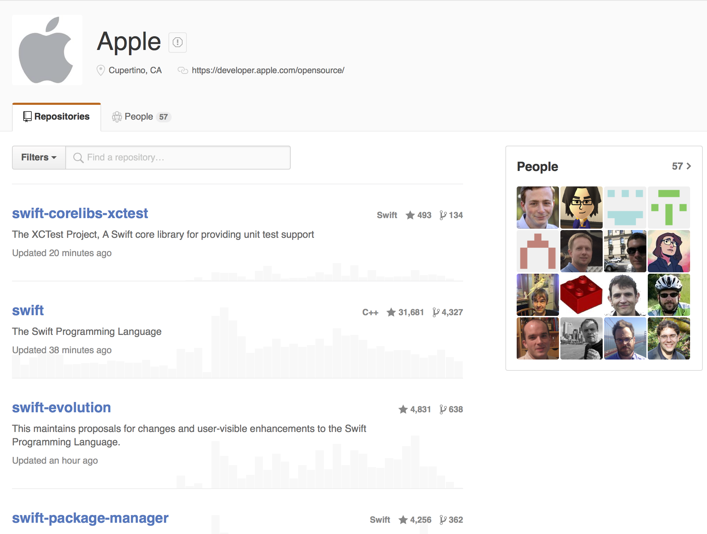
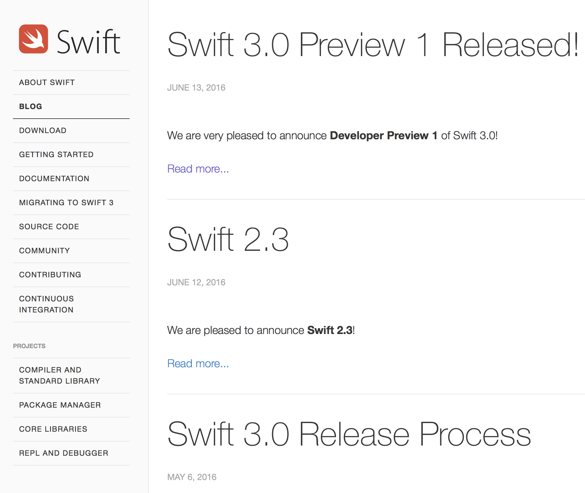
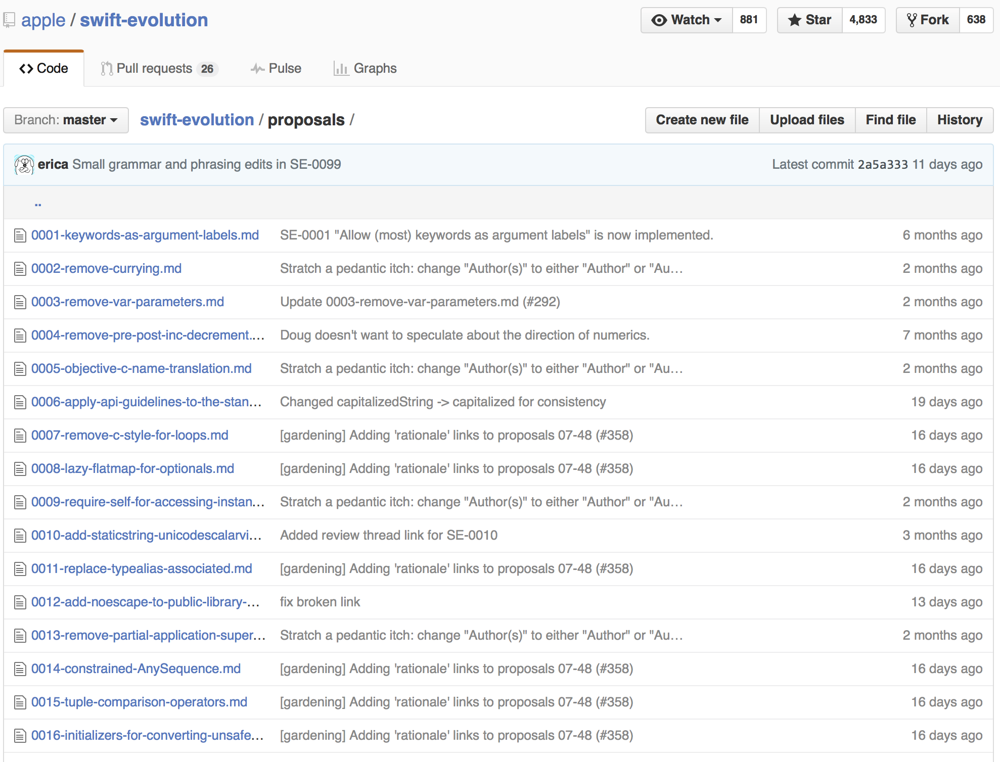
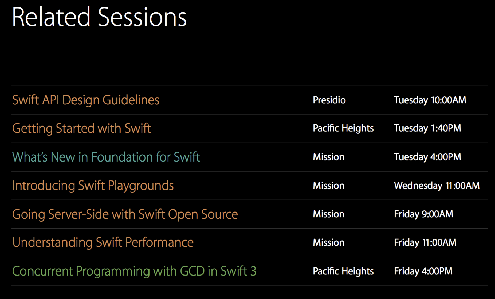

Swift 开源已有6个月，开源社区讨论从未停歇过。Swift3 的目标有以下4点：
1、发展开源社区
2、新平台的可移植性
3、开放更多基础功能
4、持续优化目前公布的 Sierra macOS 系统中，大部分 Misson Control 都已经使用 Swift 重写，甚至 Accessibility 引擎完全使用了 Swift。
这里WWDC还举了Dock的一个🌰，讲述关于这个20万行代码的应用使用 Swift 重写后代码量减少了15%之多，同时又增加了一些新功能。

众所周知，Apple 开源了 Swift，将项目托管到了 GitHub，项目有很多，譬如：swift、swift-evolution、swift-package-manager、swift-clang、swift-corelibs-libdispatch等等。不过实际可以划分为三类：
Language:swift swift-evolution
Package Manager:swift-package-manager swift-llbuild
Core Libraries:swift-corelibs-xctest swift-corelibs-foundation swift-corelibs-libdispatch其中package Manager有4个目标
早期积极发展
跨平台的软件包
无差异的发展
在未来的Xcode集成Core Libraries这里举了一个例子，介绍了Foundation这个Core lib在linux上可以使用了，暴露的API虽然不是很多，但是前景还是不可估量啊，第一步总是困难的！！！
如果想了解的更多，可以前往Swift.org。

如果你想要对 swift 提出自己的想法或意见，这意味着 evolution，Apple 十分欢迎开发者踊跃参与，但是貌似国内很多小伙伴不是很了解。大致流程是：
* 邮件交流，讲述你的想法，如何改动。
* 以 pr 方式提交你的建议。
* 一旦接受，开始review。
* 邮件列表中review，比较正式。
* 开发团队决断，打回or接受。
* 这里提供提案的列表，目前有102个，有兴趣可以看看，实时关注swift的动态。
Swift 3 的核心任务或者说是目标是提高兼容性，这对于跨平台开发至关重要。不仅是针对 Swift3，亦包括 Swift4.0 版本。
下面根据视频简单罗列一些：
API 设计准则中重要几点：
一目了然，而非过分简洁或冗余。 突出重要信息 省略冗余信息 更多请见Api-design-guidelines，貌似 Swift.gg 已经有中文版了哦。
举例：
swift 2
// Swift.Array
array.appendContentsOf([2,3,4])
array.insert(1, atIndex: 0)
// Foundation.NSURL
if url.fileURL {}
x = url.URLByAppendingPathComponent("file.txt")swift3
// Swift.Array
array.append(contentsOf: [2,3,4]) // 作为标签存在更加清晰
array.insert(1, at: 0) // index 没有存在的意义
// Foundation.NSURL
if url.isFileURL {} // 这里平常都会用到吧
x = url.appendingPathComponent("file.txt")// 都已经是URL 何必加 URLBy前缀呢很明显改进后调用意图不变，但是精简了很多。
这里推荐 swift.gg 的SE-0005 更好的把 Objective-C APIs 转换成 Swift 版本。
简单举例：
swift2
// oc
void CGContextFillPath(CGContextRef);//这是Core Graphic 画图库中的函数！不是方法
// import 调用API变成如下 还是一个函数
func CGContextFillPath(_: CGContext)swift3
// oc
void CGContextFillPath(CGContextRef)
NS_SWIFT_NAME(CGContext.fillPath(self:));// 注意NS_SWIFT_NAME修饰符
// 对 CGContext 扩展
extension CGContext {
func fillPath()
}在说说泛型:
swift2
func findAnimals() {
let request = NSFetchRequest(entityName:”Animal")
guard let searchResults =
try? context.executeFetchRequest(request) as! [Animal] {
return
}
...
use(searchResults)
}swift3
func findAnimals() {
let request : NSFetchRequest<Animal> = Animal.fetchRequest
guard let searchResults = try? context.fetch(request) {
return
}
...
use(searchResults)
}旨在实例化一个对名为 Animal 的 entity 请求，以前的写法是构造函数，而新的是上述这种方式，已惊呆。
// oc
typedef NSString *NSNotificationName; // 对 NSString 设置别名
const NSNotificationName NSUserDefaultsDidChangeNotification; // 变量A
// swift 导入
let NSUserDefaultsDidChangeNotification: String // oc变量A在swift中 实际就是String类型嘛
// 使用
center.addObserver(forName: NSUserDefaultsDidChangeNotification, ...) // 冗长swift3
typedef NSString *NSNotificationName NS_EXTENSIBLE_STRING_ENUM; // 注意修饰词 变成了一个枚举值.....
const NSNotificationName NSUserDefaultsDidChangeNotification;
// swift 导入
extension UserDefaults {
class let didChangeNotification: NSNotification.Name
}
// 使用1
center.addObserver(forName: UserDefaults.didChangeNotification, ...)
// 使用2
center.addObserver(forName: .didChangeNotification, ...)函数参数标签的一致性 swift2
func myFunction(a: Int, b: Int, c: Int) { }
myFunction(42, b: 57, c: 99)// 没有 a 标签名swift3
func myFunction(a: Int, b: Int, c: Int) { }
myFunction(a: 42, b: 57, c: 99)
这个改动应该很早就提及过。如果你不是很愿意显示参数标签，用 _ 忽略吧。不知道大家对 where 这个条件语句用的多不多，swift3 也做出了些许改动，主要是在放置位置上。
swift2
func anyCommon<T: Sequence, U: Sequence
where T.Element: Equatable,
T.Element == U.Element
>(lhs: T, rhs: U) -> Bool {}注意我们的函数名和参数列表之间掺杂了太多语句了！
swift3
func anyCommon<T: Sequence, U: Sequence>(lhs: T, rhs: U) -> Bool
where T.Element: Equatable, T.Element == U.Element {}在我们写完函数定义之后再写限制条件 where。很nice!
再来看看对未使用变量的处理
swift2
func plusOne(_ a: Int) -> Int {
return a+1
}
plusOne(x)// 发出⚠️警告，因为这个函数是有返回值swift3
@discardableResult
func plusOne(_ a: Int) -> Int {
print(a) // side effect!
return a+1
}
plusOne(x)
_ = plusOne(x)注意@discardableResult 修饰符。
移除东西可能让你惶恐不安，但是这也是苹果深思熟虑，权衡众多开发者提出的意见之后做出的决定。目的有三：
* 致力于简化语言
* 减少代码上手难度
* 向其他语言学习，取其精华，去其糟粕目前有哪些移除了的呢？
SE-0002 Currying func declaration syntax
SE-0003 函数参数列表中的 var
SE-0004 ++ 和 -- 运算符
SE-0007 C 语言中的 for 循环又有哪些新加入的呢？
SE-0025 加入 fileprivate 作用域范围，咱们用的比较多的是 public private
SE-0043 case 标签的值绑定操作
SE-0048 泛型别名，貌似是associatedType。其他还有 SE-0062 SE-0064 SE-0068 SE-0075 SE-0092，不妨去 GitHub 上一睹为快吧。
修改又有哪些呢？
SE-0028 #file 替换了 FILE
SE-0031 inout 变成了类型的一部分
SE-0040 属性语法： :替换=
SE-0049 @noescape 和 @autoclosure 可以类型属性
SE-0060 dynamicType 不再是属性 而是运算符。先看一则 swift2 的例子：
let ptr : UnsafeMutablePointer<Int> = nil
if ptr != nil {
ptr.memory = 42
}而在swift3 中则是这样干
let ptr : UnsafeMutablePointer<Int>? = nil
ptr?.memory = 42Imported C pointers in APIs obey _Nullable and Nullunspecified Consistency: nil is dedicated to Optional and ImplicitlyUnwrappedOptional 隐式解包可选类型（IUO Implicitly Unwrapped OptionaL）
swift2 中类型系统是这么推断的：
func f(value : Int!) {
let x = value + 1 // x: Int - 强制解包的结果
let y = value // y: Int!
let array = [value, 42] // [Int], [Int!], [Int?], [Any]... 它无法推断类型了 因为它不知道y到底是有值呢还是nil呢
use(array) //Cannot convert value of type ‘[Int!]’ to argument type
}swift3 中类型系统就聪明很多了：
func f(value : Int!) {
let x = value + 1 // x: Int - 强制解包的结果
let y = value // y: Int？
let array = [value, 42] // [Int?],
use(array)
}直接上代码：
// swift2
let v = 2 * Float(M_PI)
return x * CGFloat(M_PI) / 180
// swift3
let v = 2 * Float.pi
return x * CGFloat.pi / 180
return x * .pi / 180 // amazing!Swift是一个开发语言，写代码大部分都使用好用的开发工具例如苹果提供的Xcode！使用工具会影响你们每天写Swift代码的效率。
Swift3修复了一些bug在编译器和IDE的功能使用中。它也提高了错误和警告消息的精度，正如你所料，每个版本的发布Swift将会变得更快：
通过改善字符串哈希能够提高3*的速度在字典字符串中。
通过移动对象从一个堆到栈上有24*的提高(有些情况下)
现在的编译器一次缓存多个文件（整个模块优化的情况下）
代码大小优化已经减少了Swift代码编译的大小。苹果的演示 Demobots减少编译大小到原来的77％Xcode会自动推断本地的Swift接下来会做什么：
当你在一个API的方法上右击像sort(),它就会跳到对应的定义中，你能看到它的头文件定义。现在，正如你期望的一样在Xcode8中你能看到sort()是Array的扩展。
Swift Snapshots也会随着Swift的发展发布。他们提供了一个机会再和新语法合并之前，完全被集成在Xcode中。Xcode8能加载和运行Swift Snapshots在playground上。
针对目前的现状来说，Swift3只是beta版，还在测试阶段，所以现在将代码迁移到swift3.0还是不明智的，至少在代码审核的时候就会比较麻烦，同时新的Xcode8 beta对新语言的支持也比较迟钝。还是等Xcode过度到稳定版本，swift发布正式3.0版本在做迁移吧！！！
对于想尝鲜的同学来说，可以暂时将代码迁移到Swift2.3的版本，下面我们来说一下什么Swift2.3包含了什么
Swift2.2 + New SDKs = Swift2.3
Build, test, and submit to App Store fully supported
Playgrounds and documentation depend on Swift 3
Interim solution until you migrate to Swift 3所以当我们把当前工程的迁移至Swift2.3是最好的选择，这样当Swift发布了最新的Swift3之后，选择Xcode->edit->Convert->To Current Swift Syntax... 就可以将工程迁移至Swift3了
本次Session中只宽泛的讲述了Swift3中的变化，如果想了解更多的细节。请到下面列出的Session中去了解更多
